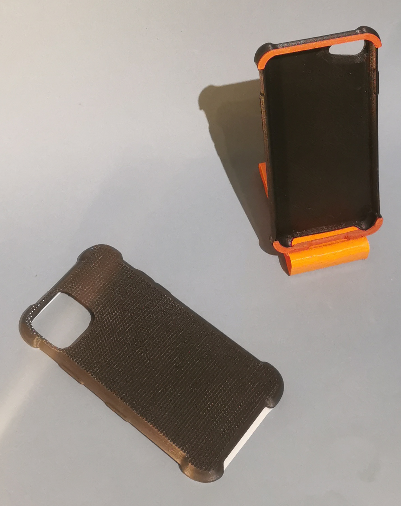
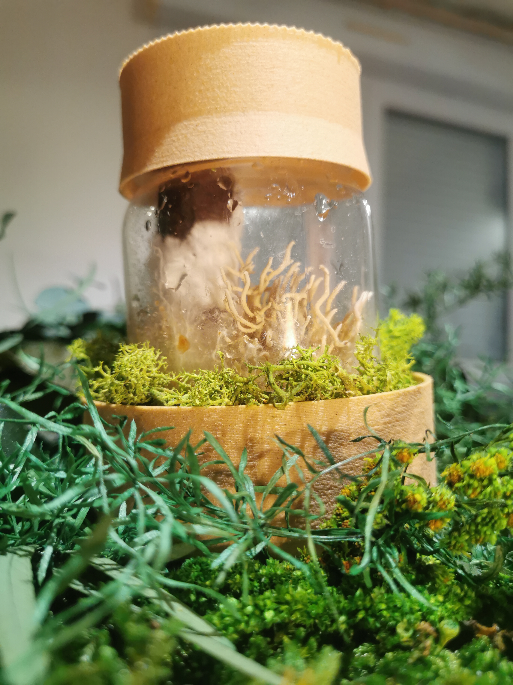
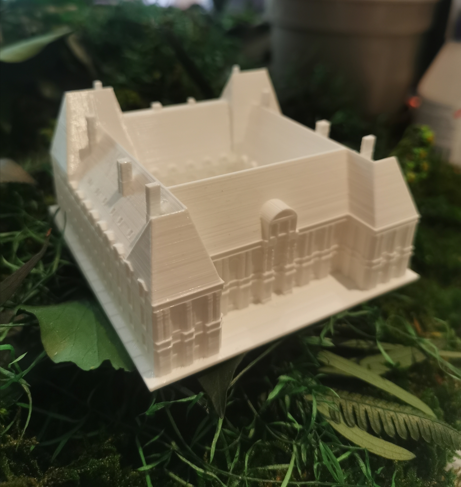

<!DOCTYPE html>
<html> 
    <head>
        <meta charset="utf-8" />
        <link rel="stylesheet" href="style.css" />
        <script src="https://code.jquery.com/jquery-3.6.0.js"></script>
        <script src="var.js" type="text/javascript" charset="utf-8" async defer></script>
        <link rel="shortcut icon" type="image/x-icon" href="Icone.ico" />
        <link rel="canonical" href="https://www.monsite.fr"/>
        <link rel="stylesheet" type="text/css" href="magnify.css">
        <title>Ewen Bignon Designer produit/title>
        <script src="https://cdnjs.cloudflare.com/ajax/libs/jquery/3.6.0/jquery.min.js"></script>
        <meta property="analytics-track" content="monsite - index/tab"/>
        <meta property="analytics-s-channel" content="pageAccueil"/>
        <meta name="description" content="Mes tutoriels persos"/>
        <meta property="og:title" content="Ewen Bignon, designer produit"/>
        <meta property="og:description" content="Mes différents projets de conception de produits">
        <meta property="og:url" content="" />
	    <meta property="og:locale" content="fr_FR" />
	    <meta property="og:image" content="Une image qui représente mon site.jpg" />
	    <meta property="og:type" content="website" />
	    <meta property="og:site_name" content="Tout le monde peut le faire" />
    </head>
<header>
<h1 class="txtlogo">Ewen Bignon</h1><span class="pourvous" id="ancrehaut"></span>
<div class="bouttonnav" id="bouttonnav">
    <div class="barre" id="barre1"></div>
    <div class="barre" id="barre2"></div>
    <div class="barre" id="barre3"></div>
</div>
<nav>
    <ul>
        <li><a href="#coque">La coque de smartphone</a></li>
        <li><a href="#veilleuse">La veilleuse bioluminescente</a></li>
        <li><a href="#archi">La maquette architecturale</a></li>
    </ul>
</nav>
</header>


<section class="projets">
    <div class"projet" id="coque">
        <h2>La première coque de smartphone à chaine de valeur 100% Bretonne et biosourcé<h2>
	
	<p>Cette coque est le fruit d'une R&D initiée en Juin 2022, d'une modification de la technologie d'impression 3D FDM pour un passage en direct-drive permettant d'imprimer un filament flexible, biosourcé à base de coquilles d'huîtres, correctement. Un état de surface d'excellente qualité obtenu par le procédé d'impression 3D continue.</p>
    </div>
    <div class"projet" id="veilleuse">
        <h2>Culture de panellus Stipticus, la veilleuse bioluminescente.<h2>
	
	<p>Le support de cette veilleuse est lui aussi biosourcé mais tout la défi résidait dans le fait de rendre la lumière biosurcée. Une seule solution, la bioluminescence. Trois mois après l'integration du mycellium dans le substrat puis l'ajout d'un bout de chêne stérilisé, l'intensité lumineuse est fonctionellement au rendez-vous. En effet on peut grâce à elle se repérer dans le noir, même à 5 mètres. Cela permet d'offrir une alternative aux stickers phosphorescent produits en Asie tout en apportant de la magie dans une chambre ou autre pièce de vie.</p>
    </div>
    <div class"projet" id="archi">
        <h2>Maquettes de contextes et bâtiments architecturaux<h2>
	
	<p>J'ai permis aux architectes de gagner des journées de travail, une augmentation de la qualité et du détail et une empreinte écologique moindre de leurs maquettes de contexte et bâtiments d'étude. Une prise de côte sur earth pro, une modélisation sur Solidworks et une impression en amidon de maïs recyclé permettent d'obtenir un produit de qualité qui soulage les architectes d'un travail qui n'est pas le centre névralgique de leur proposition de valeur.</p>
    </div>
</section>


<body>

</body>
<footer>
</footer>   	
</html>
